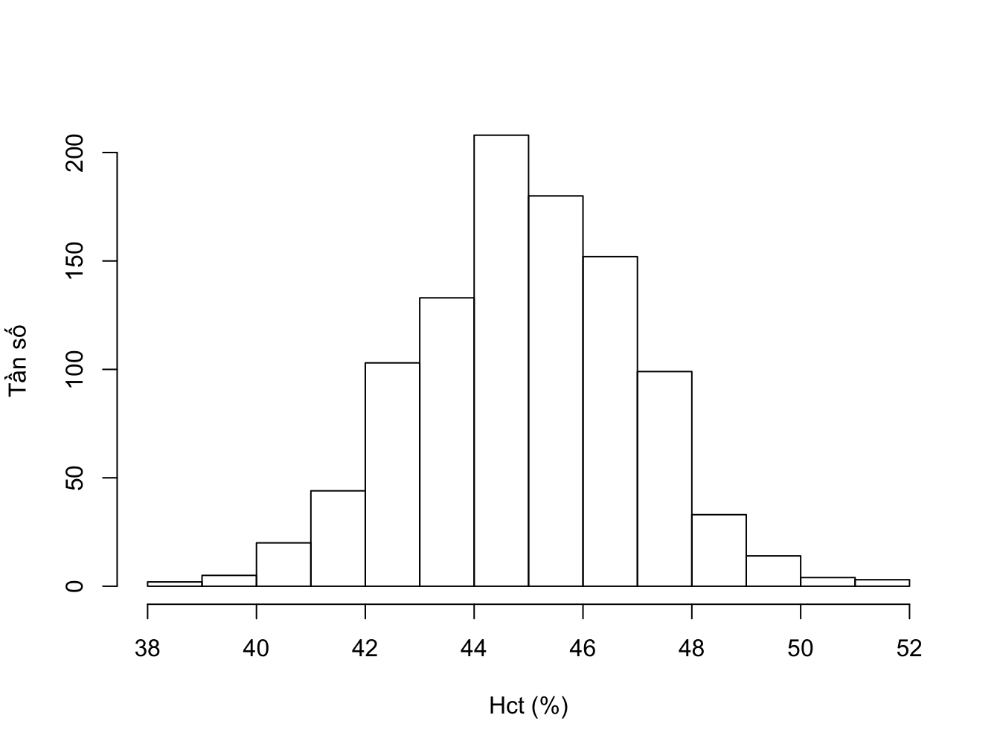
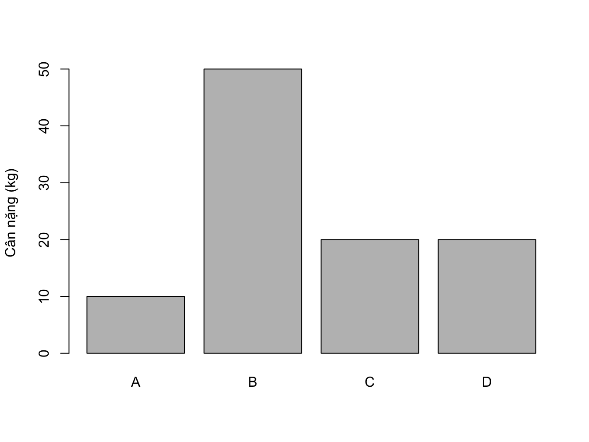

Chương 4 Phân tích mô tả
- Mục tiêu
Mô tả một cách đầy đủ, trung thực và súc tích bộ dữ liệu đang có
Ứng dụng
- Kiểm tra dữ liệu
- Hiểu dữ liệu
- Lựa chọn hướng phân tích và phương pháp phân tích phù hợp
4.1 Một số khái niệm
4.1.1 Bảng dữ liệu
Bảng dữ liệu (dataset) là một bảng được tạo thành từ nhiều giá trị (value). Mỗi giá trị thuộc về một biến số (variable) và một đơn vị quan sát (observation unit). Các giá trị trong cùng một biến số phải có cùng thuộc tính (attribute). Một bảng dữ liệu điển hình có cấu trúc như sau gọi là bảng dữ liệu gọn gàng (tidy data).
| id | ngaysinh | ngaync | gioitinh | hct0 | cannang_kg |
|---|---|---|---|---|---|
| 001 | 2013-05-08 | NA | Nam | 49 | 10 |
| 002 | 2018-12-03 | 2018-02-03 | N<U+1EEF> | 250 | 50 |
| 003 | 2013-12-20 | 2018-12-13 | Nam | 50 | 20 |
| 003 | 2013-12-20 | 2018-12-13 | Nam | 50 | 20 |
Trong bảng dữ liệu gọn gàng, mỗi cột (column) là một biến số. Ví dụ trong bảng trên ta thấy ngaysinh, gioitinh là các biến số. Các giá trị nằm trong cùng một biến số có cùng thuộc tính, ví dụ các giá trị trong biến gioitinh có cùng thuộc tính là chuỗi ký tự, hoặc biến cân nặng chỉ gồm các giá trị là số.
Mỗi hàng ngang (row) là một đơn vị quan sát. Các đơn vị quan sát thường được đánh số hoặc gán mã định danh để dễ dàng phân biệt với nhau. Mã số này được chứa trong một biến số và thường là biến đầu tiên. Trong bảng ví dụ trên, đơn vị quan sát thứ nhất có mã số 001, đơn vị quan sát thứ hai có mã số 002.
4.1.2 Biến số
4.1.2.1 Phân loại biến số
Có nhiều cách phân loại biến số khác nhau, cách phân loại sau đây thường được trình bày và ứng dụng trong thực tế.
- Nhị giá: biến số có 2 giá trị (VD: biến tử vong gồm 2 giá trị là sống/chết)
- Phân nhóm: có >2 giá trị, không có thứ tự (VD: biến quốc gia có thể có các giá trị Việt Nam, Lào, Thái Lan…)
- Thứ tự: các giá trị có thứ tự (VD: nhóm tuổi (từ 18-25, 25-45, trên 45), mức độ hài lòng (không hài lòng, trung bình, rất hài lòng))
- Liên tục: có thang đo và đơn vị (VD: tuổi)
4.1.2.2 Mã hóa biến số
Biến số phân nhóm: Thường được mã hoá thành con số, ví dụ mã hóa các giá trị của biến quốc gia dưới dạng Việt Nam = 1, Lào = 2, Thái Lan = 3. Tuy nhiên, điều đó không biến chúng thành biến số liên tục. Ta không thể thực hiện các phép tính toán trên biến số mã hóa này, như 1 + 2 = 3, nhưng trong ví dụ trên thì Việt Nam + Lào không thể = Thái Lan.
Dữ liệu bị thiếu: Thường được mã hoá riêng, một cách phổ biến là mã hóa một giá trị lớn bất thường (9999) cho dữ liệu bị thiếu khi thu thập.
Trong phân tích mô tả, cần mô tả số lượng dữ liệu bị thiếu cho từng biến số. Dữ liệu bị thiếu thường bị loại ra khỏi phân tích (do người thực hiện, hoặc do phần mềm phân tích), do đó nếu không tiến hành mô tả số lượng dữ liệu bị thiếu trước khi phân tích thì kết quả phân tích có thể bị sai lệch hoặc bị hiểu nhầm.
4.1.2.3 Lựa chọn biến số cho phân tích
Trong bảng dữ liệu có thể bao gồm rất nhiều biến số, tuy nhiên không phải bất cứ biến số nào cũng có giá trị và nên đưa vào phân tích. Cần lựa chọn những biến số quan trọng dựa trên một kế hoạch phân tích đã lập ra từ trước.
Biến số chính
Được xác định dựa vào câu hỏi nghiên cứu hay giả thuyết nghiên cứu. Các biến số chính thường được chia thành biến số độc lập và biến số phụ thuộc.
- Biến số độc lập (independent variable): là những biến số thể hiện yếu tố có mối liên quan (association) hay là nguyên nhân (causation) của kết cuộc quan tâm trong nghiên cứu.
- Biến số phụ thuộc (dependent variable), còn gọi là biến số kết cuộc (outcome): là biến số thể hiện kết cuộc quan tâm trong nghiên cứu.
Các yếu tố gây nhiễu
Yếu tố gây nhiễu là các yếu tố vừa tác động lên biến số phụ thuộc, vừa có tác động lên biến số độc lập. Việc xác định yếu tố gây nhiễu cần phải dựa vào y văn hoặc kiến thức chuyên ngành. Nếu vấn đề nghiên cứu là vấn đề rất mới thì có thể dựa vào bộ dữ liệu sẵn có để xác định những yếu tố gây nhiễu tiềm năng.
Số lượng biến số thường bị giới hạn bởi cỡ mẫu và đặc điểm của biến số phụ thuộc. Vì vậy không nên chọn các biến số đưa vào phân tích một cách tùy tiện, tràn lan mà nên chọn theo kế hoạch đã xác định từ ban đâu và luôn tập trung vào câu hỏi hay giả thuyết nguyên cứu để quyết định có nên đưa một biến nào đó vào phân tích hay không.
4.2 Phân phối thống kê
Phân phối thống kê là sự mô tả các giá trị có thể có của một biến số, đi kèm với tần suất hay khả năng xuất hiện của mỗi giá trị.

Ví dụ trên thể hiện phân phối của biến dung tích hồng cầu (Hct). Biến này có thể có các giá trị từ 38 đến 52, trong đó tần suất để dung tích hồng cầu là 44-46 là lớn nhất, tần suất của một giá trị được thể hiện bằng độ cao của các cột trong biểu đồ.
Biểu đồ phân phối của biến dung tích hồng cầu cũng là một ví dụ điển hình của phân phối bình thường (normal distribution) rất phổ biến và thường được nhắc đến trong thống kê. Phân phối bình thường có các đặc tính đặc trưng về mặt toán học (trung bình, độ lệch chuẩn) và là cơ sở của rất nhiều các phép kiểm định, mô hình thống kê.
4.3 Mô tả biến số phân nhóm
4.3.1 Biểu đồ
- Biểu đồ cột

4.3.2 Chỉ số
- Tần số
- Tỷ lệ phần trăm
4.4 Mô tả biến số liên tục
4.4.1 Biểu đồ
4.4.1.1 Histogram
Ví dụ ta cần mô tả dữ liệu gồm các giá trị:
1, 5, 2, 3, 4, 3, 4, 2, 3
Khi xếp thứ tự các giá trị này từ nhỏ đến lớn thì ta được như sau:
1, 2, 2, 3, 3, 3, 4, 4, 5
Xếp các giá trị lại thành cột
## 3
## 2 3 4
## 1 2 3 4 5Kết quả thu được từ những bước trên tương ứng với histogram sau

4.4.1.2 Boxplot
Dữ liệu nói trên cũng có thể được trình bày thành dạng biểu đồ như sau:

4.4.2 Chỉ số
4.4.2.1 Mô tả vị trí tập trung
Trung bình (mean)
Được tính bằng cách lấy tổng tất cả các giá trị trong một biến chia cho số lượng giá trị của biến đó. Trung bình thường được thể hiện bằng công thức:
\[\bar{x} = \frac{1}{n} \sum_{i=1}^{n}x_{i}\]
Tối ưu nếu dữ liệu có phân phối tương đối:
- Đối xứng
- Không có đuôi quá dài hoặc giá trị ngoại lai (outlier)
Hầu hết các mô hình và kiểm định thống kê dựa trên trung bình.
Trung vị (median)
Là giá trị ở chính giữa của của một biến số liên tục khi sắp xếp theo thứ tự tăng dần. Ví dụ cho một biến số gồm các giá trị 1, 3, 4, 7, 6, 8, 9. Để xác định trung vị, đầu tiên ta sắp xếp các giá trị này theo thứ tự tăng dần như sau:
1, 3, 4, 6, 7, 8, 9
Dễ thấy giá trị ở chính giữa chính là 6.
Trong trường hợp số lượng các giá trị là số chẵn, ví dụ:
1, 3, 4, 6, 7, 8, 9, 11
Thì trung vị là giá trị trung bình của hai giá trị ở chính giữa. Cụ thể ở đây là (6+7)/2 = 6.5.
Một số tính chất của trung vị:
- Rất gần trung bình khi dữ liệu có phân phối đối xứng
- Nhỏ hơn trung bình khi dữ liệu bị lệch về bên phải
- Vẫn có giá trị khi dữ liệu có giá trị ngoại lai
4.4.2.2 Mô tả độ phân tán
Độ lệch chuẩn (standard deviation, SD)
Nếu dữ liệu xấp xỉ tuân theo phân phối bình thường (một đỉnh, đối xứng, không nhiều giá trị ngoại lai), thì * ~68% quan sát nằm trong khoảng +/- 1SD * ~95% quan sát nằm trong khoảng +/- 2SD
Khoảng tứ phân vị (IQR)
- Phân vị thấp (Q1): giá trị mà 25% số giá trị quan sát nhỏ hơn
- Phân vị cao (Q3): giá trị mà 25% số giá trị quan sát lớn hơn
- 50% số giá trị quan sát nằm trong khoảng từ Q1 đến Q3
Khoảng giá trị
- Cỡ mẫu rất nhỏ
- Phụ thuộc vào cỡ mẫu